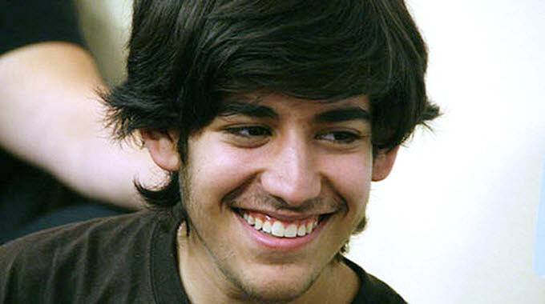

The Internet’s Own Boy follows the story of programming prodigy and information activist Aaron Swartz. From Swartz's help in the development of the basic internet protocol RSS to his co-founding of Reddit, his fingerprints are all over the internet. But it was Swartz's groundbreaking work in social justice and political organizing combined with his aggressive approach to information access that ensnared him in a two-year legal nightmare. It was a battle that ended with the taking of his own life at the age of 26. Aaron's story touched a nerve with people far beyond the online communities in which he was a celebrity. This film is a personal story about what we lose when we are tone deaf about technology and its relationship to our civil liberties.
.jpg)
The Internet's Own Boy: The Story of Aaron Swartz is a 2014 American biographical documentary film about Aaron Swartz written, directed, and produced by Brian Knappenberger.[3][4] The film premiered in the US Documentary Competition program category at the 2014 Sundance Film Festival on January 20, 2014.[5]
After its premiere at Sundance, Participant Media and FilmBuff acquired distribution rights of the film. The film was released to theatres and VOD on June 27, 2014, in United States.[6] It will be followed by a broadcast television premiere on Participant's network Pivot in late 2014.[7][8][9][10]
The film also played at the 2014 SXSW on March 15, 2014.[11] It served as the opening film at the 2014 Hot Docs Canadian International Documentary Festival on April 24, 2014.[12]
The film's UK premiere took place at Sheffield Doc/Fest in June 2014. In August 2014, the film was screened at the Barbican Centre in London as part of Wikimania 2014. The BBC also aired the film in January 2015 as part of its Storyville documentary brand. It was also released on the Internet with a Creative Commons license.[13]